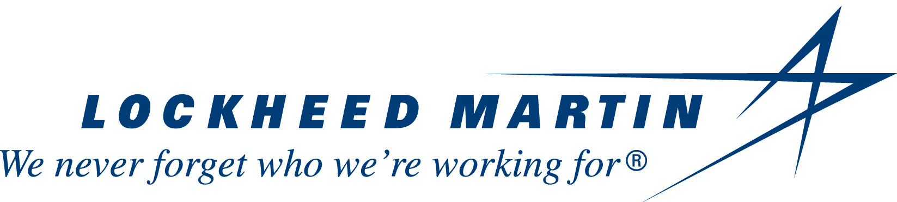

About Me
My name is Matthew Corless. I am a senior at Arizona State University studying for a B.S. in Software Engineering. I am currently working for Lockheed Martin. I interned Lockheed Martin for 4 months in the summer of 2016. I initially started a co-op with them for the summer of 2017 but this turned into a full-time employment when my manager realized I could do my last semester online. I currently work on Lockheed's Automated Weight & Balance System. Every aircraft in the Department of Defense uses our AWBS software in order to generate flight forms for every mission. The AWBS team consists of ten developers utilizing agile and scrum. Our primary project is a Xamarin client that will be released June 2018.
- My responsibilities on my current team include:
- Primary developer for both of our ASP.NET websites. I am responsible for the full development cycle of both websites including planning, design, implmentation, deployment, and maintenance. cs.lmaeronautics.com (foreign customers) and https://awbs.hill.af.mil (DoD site, CAC required)
- Primary developer for RESTful API being developed for our Xamarin application. This is the first REST API for LM Aeronautics and I work closely with Fort Worth network engineers to establish secure web services.
- Creating and maintaining the server database (SQL Server) throughout development as the client schema changes.
- Setting up various servers for us to use for internal testing and for Beta tests with sanitized data. This includes setting up Windows Server, SQL Server, and IIS)
Professional Projects
Here are the projects that I have worked on individually or collaboratively with other developers.
Current AWBS Team (August 2017 - )
REST API
When I joined the team the API was a simple prototype using SQLite for the databases. I took the prototype to a finished product. This involved updating the entire project to use SQL Server, updating the schema, redoing the authentication, handling error codes, writing new API calls as needed, and working with Lockheed network engineers to make the REST API secure. Since this is the first LM Aeronautics REST API I have needed to work closely with them so we can make the services secure enough for Lockheed Martin standards (schema validation, two-factor authentication, etc.)
cs.lmaeronautics.com
This website is a public facing site meant for our foreign customers.
- Tasks I completed were:
- Added functionality to upload and download software.
- Created a system to allow users to download software based on their need and the currently valid agreements with their country. This allowed us stop relying on an external site and allowed us to host our own software on our site. This change directly led to more users and opened doors to contracts with more foreign countries.
- Added functionality for Fort Worth engineers to create and upload modifications. These modifications are primarily used for F-35s and adjust the aircraft's weight and balance record in the database based on the type of modification.
awbs.hill.af.mil
This site is for our Department of Defense users. It acts as a central repository for software products and user permissions for our web services. I primarily maintain the website and only work on it if something breaks if there is a high priority task. Most of my additions to this site are in preparation of our new AWBS client coming out this summer.
- Tasks I completed were:
- Updated authentication with CAC cards after the DoD created a new edge server that broke our old authentication.
- Added functionality for Fort Worth engineers to create and upload modifications. These modifications are primarily used for F-35s and adjust the aircraft's weight and balance record in the database based on the type of modification.
SOAP Web Services (for both sites listed above)
These are our legacy web services that have been used for the past 10 years. I don't work on them unless something breaks breaks for one of the sites.
- Bugs I fixed were:
- Fixed a race-condition bug that was causing power users to lose permissions. This bug existed for over two years and led to countless headaches that multiple developers could not figure out.
- Added functionality to ensure users with permissions for multiple countries do not accidentally upload an aircraft to the wrong country.
- Updated authentication for the DoD web services after the DoD created a new edge server that broke our old authentication.
Xamarin client
I have not worked on the client as much as I would like to. Most of my work in the client is code reviewing others (we require two code reviews for each check-in). Something I did do was create a logging feature to log any unhandled exceptions and non-200 API responses. I added an API call to sync these JSON logs with the server so we can look at issues the users are having. A future update will likely have a log viewer for the the user to contact our support line with.
Past Projects as an intern (May 2016 - August 2016 and May 2017 - August 2017)
Viper Change Management Website
As an intern I worked on the Viper Change Management (VCM) website. VCM started as a website repository for all f-16 change requests in the world. It has expanded through the years to store other repositories related to f-16 and other aircraft.
- Tasks I completed were:
- Created in depth user guides for each VCM process (VCR, Airworthiness, FOSTR, CSI, Flight Forms)
- Tested various changes by two senior developers before each VCM release.
- Created a new user input for VCRs and an RDLC report that would display each VCR with 'yes' selected.
- Created a new multi-view that would display a dropdown to users with specific roles to change the location of a VCR, therefore changing the VCR name. Users without the specific permissions would see the name of the VCR as a non-editable label.
Engineering Drawing Tracker Website
As an intern I primarily worked on the EDT website. EDT is a small internal website used in conjunction to VCM to keep track of drawings for Viper Change Requests. Before the website Lockheed engineers needed to track their hours worked and overall status for each drawing in spreadsheets. The website also enforces a strict process flow for each drawing type. The complex process flows allow engineers to challenge drawings assigned to them, reject a drawing to a previous state, and advance a drawing to the next state. Gatekeepers, or users with a manager role, can assign, recall, cancel, and put drawings on-hold.
- Tasks I completed were:
- Release notes of some of the changes I implemented: 2016 June_2017 August_2017
- Worked various bugs and tasks on TFS including: fixing hour tracking throughout the site, generating Word, PDF, and Excel reports, and adding new features such as bulk profile processing.
- Added front-end and back-end logic to allow users to advance, challenge, and reject drawings assigned to them in bulk instead of having to perform actions on each individual drawing. This utilized JavaScript for client-side logic on which profiles could be selected together, server-side logic to perform the bulk processing (profile status change, bulk emailling, etc). I was able to multi-thread these processes so that it could operate 3-4 times faster (on my development environment) but I switched teams before it was tested enough to be put in production.
- Created History database table and supporting C# classes that would track every change a user made to a profile in one session and would save the changes in a compact JSON string. Created a web control to display every change in a profile since its creation, the user that committed the change, and the date of the change.
- Examples of work:
My Personal Projects
Here are the projects that I have worked on individually or collaboratively with other developers. I have links for source code on projects that are not intellectual property or covered in a non-disclosure agreement.
Personal
Converter
This application is "another converter app" that converts between decimal, binary, hexadecimal, and octal. However, this app also shows the user how to do each conversion. The repository was set-up for continuous integration with Travis CI and Maven. Over winter break (2017-2018) I started to build an android version of this with more functionality. The android portion is still a work in progress and likely will not be finished until the summer of 2018 when I will have more time to work on personal projects.
matthewcorless.me
This is the simple single page application (SPA) you are currently viewing. The website uses HTML, CSS, and JavaScript. I plan on building upon over time. I got the idea when I found out 'ME' domains are free for one year for students and that websites can be hosted on GitHub for free. Currently the website acts as a bloated resume but I hope to add to it more in the future.
School
SER 423 - Android
Multi-View Android app that allows the user to manipulate (browse, view details, add, delete, and modify) geographic place descriptions. The app uses a SQLite database as its underlying model.
NOTE: this is an ongoing project that is due 4/14/2018.SER 423 - iOS
Nearly identical to the android app but implemented for iOS with Xcode and Swift.
NOTE: this is an ongoing project that is due 4/28/2018.Contact Me
Feel free to contact me via phone (630)303-2080 or email: